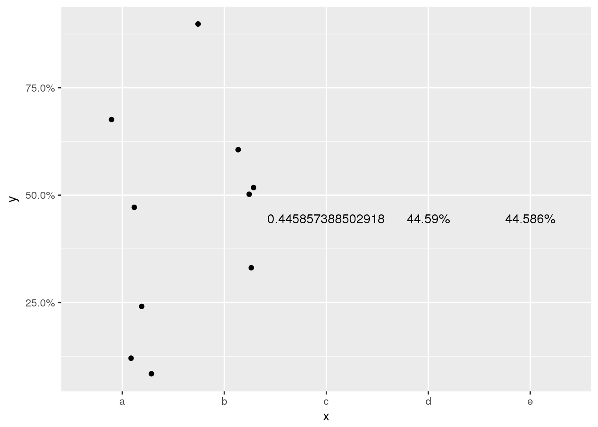

Documentation used:
sprintf - https://www.rdocumentation.org/packages/base/versions/3.4.3/topics/sprintf scale_y_continuous - https://www.rdocumentation.org/packages/ggplot2/versions/2.2.1/topics/scale_continuous
suppressPackageStartupMessages(library(tidyverse))
formatP <- function(x, d=1){
sprintf(glue::glue("%0.{d}f%%"),x*100)
}
data.frame(y=runif(10), x = rep(c("a","b"))) %>%
ggplot(aes(x=x, y=y)) +
geom_jitter() +
geom_text(aes(x = "c", y=mean(y), label = mean(y)), check_overlap = TRUE) +
geom_text(aes(x = "d", y=mean(y), label = formatP(mean(y), 2)), check_overlap = TRUE) +
geom_text(aes(x = "e", y=mean(y), label = formatP(mean(y), 3)), check_overlap = TRUE) +
scale_y_continuous(labels = formatP)
data.frame(y=runif(10), x = rep(c("a","b"))) %>%
ggplot(aes(x=x, y=y)) +
geom_jitter() +
geom_text(aes(x = "c", y=mean(y), label = mean(y)), check_overlap = TRUE) +
geom_text(aes(x = "d", y=mean(y), label = formatP(mean(y), 2)), check_overlap = TRUE) +
geom_text(aes(x = "e", y=mean(y), label = formatP(mean(y), 3)), check_overlap = TRUE) +
scale_y_continuous(labels = formatP(3))## Error in f(..., self = self): Breaks and labels are different lengths
Is there a way to pass a number of decimals to the formatP function shown here in the scale_y_continuous?